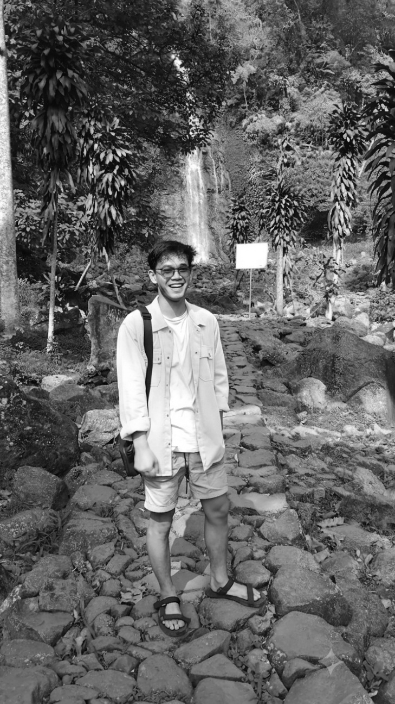

Sehari-hari saya berkutat di dunia operasional. Dari sana, saya sering mengamati sistem manajemen jaringan retail dan mikir, "Kayaknya seru kalau bisa bikin ginian sendiri."
Akhirnya, saya terjun belajar secara otodidak. Saya belum ahli, masih sering nyasar di StackOverflow, dan kadang error 1 baris nyarinya sampai besok pagi. Tapi ya namanya juga belajar, perlahan aja
Daftar teknologi yang pernah saya sentuh. Ada yang lumayan paham dan ada yang cuma numpang singgah begitu.
phpMyAdmin & Firebase Auth. Bisa nyimpan data dengan aman. Asal jangan suruh simpan Perasaan aja.
HTML & JavaScript. Bisa bikin tombol dan form. Kadang tombolnya nggak jalan, tapi secara visual mantap.
PHP (Pemberi Harapan Palsu... eh, Hypertext Preprocessor). Masih terus diulik biar logikanya makin lancar.
Canva, Figma, CSS. Lumayan jago bikin tampilan web jadi cakep, selama div-nya nggak berantakan ke mana-mana.
C, C++. Sedang mencoba ngobrol sama mesin CNC. Kadang mesinnya nurut, kadang mesinnya cuek begitu aja 😓.
Terinspirasi dari kompleksnya operasional retail. Ngurusin stok dan data penjualan biar rapi dan nggak bikin pusing (yang pusing karyawannya hhee) 🤭.
Demo disiniBikin sistem pencatatan pesanan ala-ala kafe hits, biar pesanan kopi nggak ketukar sama es teh, dan yang paling penting biar engga kejadian 1 cup yang di jual, stock nya hilang 10 cup
Demo disiniBuat nampilin portofolio dan ngumpulin data. Formulirnya buat input data ya, bukan buat curhat.
Bisa bedain mana kopi beneran, mana kopi sachet, dan mana kopi jagung. Lumayan penting buat modal melek pas lagi *debugging* di tengah malam.